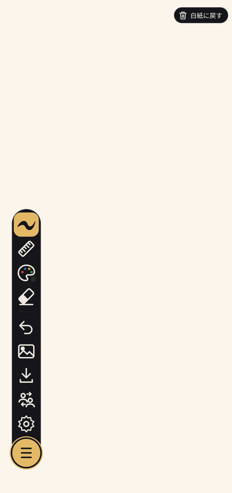

📖 はじめに
「めものわ」は、アイコンをタップしてから描けるまでの圧倒的な起動の速さにこだわった、シンプルな手描きノート（お絵かき）アプリです。
目の前にいる家族や友達と、インターネット回線やサーバーを介さずにBluetooth・Wi-Fi直接通信でつながり、まるで1冊のスケッチブックを広げているかのように同じ白紙へリアルタイムに一緒に書き込むことができます。

🎯 やりたいことから探す
📑 機能別ガイド
1. お絵かき・基本操作
なめらかな通常ペン、あたたかいクレヨン、スプレー粒子、半透明マーカーの切り替えや、定規（直線ツール）、カラーパレット、消しゴム、アンドゥの使い方を解説します。
使い方を見る →2. 背景と画像の配置
やさしいクリーム色の無地キャンバス、文字練習や図面に役立つ方眼紙の選択、端末内の写真やイラストの読み込みと2本指ピンチによる位置・サイズ調整を解説します。
使い方を見る →3. 近くの人と共同編集
ネット環境不要！BluetoothとWi-Fi直接通信で近くの端末と接続し、QRコードと4桁パスワードで安全に同じキャンバスを共有して一緒に描く手順を解説します。
使い方を見る →4. 画像保存・印刷・設定
「書いた範囲」や「キャンバス全体(A4)」の画像保存、背景透過PNG書き出し、左右回転、プリンター印刷、スキン配色やバックアップの設定を解説します。
使い方を見る →❓ よくある質問
はい。BluetoothおよびWi-Fiの端末間直接通信（AndroidのNearby Connections機能など）を使用するため、Wi-Fiルーターのない屋外やオフライン環境でも、近くにいる人とその場で白紙ノートを共有して一緒に描くことができます。
一切不要です。アプリを開けばすぐに白紙キャンバスが表示され、タップひとつで描き始めることができます。メールアドレスや個人情報の入力も必要ありません。
はい。アプリ内のローカルデータベースに自動保存されるため、アプリを終了しても次回起動時にそのまま続きを描くことができます。また、ツールバーの保存メニューから端末の写真アルバムへの画像保存やプリンター印刷も行えます。
手書き描画、太さやペンスタイルの選択、直線定規、方眼紙や背景画像の配置、最大4人までの共同編集など、主要な機能をすべて無料でご利用いただけます。広告非表示、人数無制限の共同編集、高画質・背景なし透過PNG書き出しなどを拡張するPREMIUMプランもご用意しています。